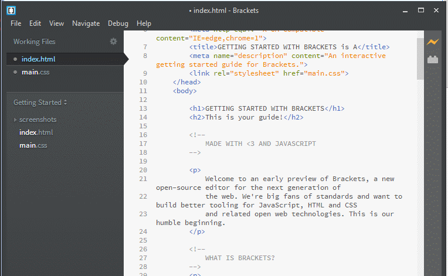

Bracket.IO
Brackets is an open source code editor for web designers and front-end developerss.
Understant the Bracket Core
Unique HTML coading with live Development
Rapid CSS Coading
JS Debugging with Theseus
Extra Features
Unique HTML coading with live Development
Instant Update in the Browser

Wow!! Live CSS edit works
Brackets was one of some code editors which offered live preview of web pages as you edit web pages, with out installing any additional plug ins. Live Preview features connects your editor to your browser, so as you edit HTML or CSS you can see real time updates on your browser window.
You don’t need to install any additional plug ins for Live preview feature and no need to refresh browser windows manually every time to see changes made in HTML or CSS. Just edit your HTML or CSS and see changes even without saving your file.
You can also view the preview of color, gradient or image, when you hover your mouse. Here you can see this good feature in action.
Rapid CSS Coading
Inbuilt feature of CSS3 transition customization
How it works ?
Just click on the element you want to apply new CSS rules and select Quick Edit or press Ctrl / ⌘ + E , now you can apply your new CSS rules.
You can even create New Rule, with Live Preview feature you can see your changes instantly in browser window. When you are done, hit Esc** key to exit Quick Edit mode.
JS Debugging with Theseus
Theseus makes inspecting variables and control flow easy, even in asynchronous Code.Real-time code coverage with Theseus
What is Theseus ?
Theseus is a new type of JavaScript debugger for Node.js, Chrome, and both simultaneously. It is an extension for the Brackets code editor.
Some Features of THESEUS
- Code coverage in real-time
- Retroactive inspection
- Asynchronous call tree
Real-time code coverage: Theseus shows the number of times that every function has been called next to its definition. Functions that have never been called are also given a gray background. You can watch the code light up as you interact with the web page.
Retroactive inspection: Click a call count to see the values of parameters, return values, and any exceptions that have been thrown from that function. It's like adding console.log without having to save and reload.
Asynchronous call tree: If you click multiple call counts, all invocations of those functions are shown in a tree. When callback functions are called, they show up in the tree under the function that created them, regardless of whether they were called immediately or many ticks later.
Extra Features
- Quick Keyboard ShortCuts
- Code Hint
- Multiple cursors
- Extension (Plug-Ins) For Brackets
- Useful Extensions
Quick Keyboard ShortCuts
There are many keyboard shortcut available just like any text editor, which helps you quickly edit and navigate between documents.
Go to Edit menu to see all available shortcuts. With Ctrl+/ and Ctrl+Shift+/ you can quickly comment out and uncomment your code.
Select any HTML tag and hit Ctrl+Space to see code hint
More Shortcuts: https://github.com/adobe/brackets/wiki/Brackets-Shortcuts
Code Hints
Brackets offers Code hint for HTML tags, attribute names and values, CSS property names and values and javaScript property names. Ctrl+Space is keyboard shortcut to see code hints for selected html tag or CSS property.
Multiple cursors
- Hold down the Alt key, then drag vertically to create cursors, or drag diagonally to create a rectangular selections.
- Make one selection, then hold down the Cmd key (Mac) or Ctrl key (Win) and click or drag to add another cursor or selection.
Extension (Plug-Ins) For Brackets
Extensions are very important part of any text editor. There are hundreds of extensions are available for every text editor. Brackets also has a great support for extension.
Brackets has a simple and easy to use Extension Manager, which lets you see available and installed extension.
Extension Manager is available via the File menu or you can click on Extension Manager icon available in the right side just below the Live preview icon. Click on it to Launch the Extension Manager.
Useful Extensions
There are lot of extension are available for Brackets, you can view Brackets Extension at github.
Open Extension Manager, type the name of extension you want to install and click install button.
- Emmet
- MarkDown review
- AutoPrefixer
- HTML Templates
- LESS AutoCompile
- CSSLint
- jSHint
- W3CValidator
- Beautify